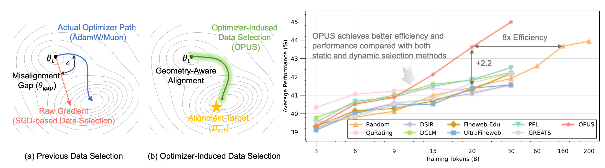
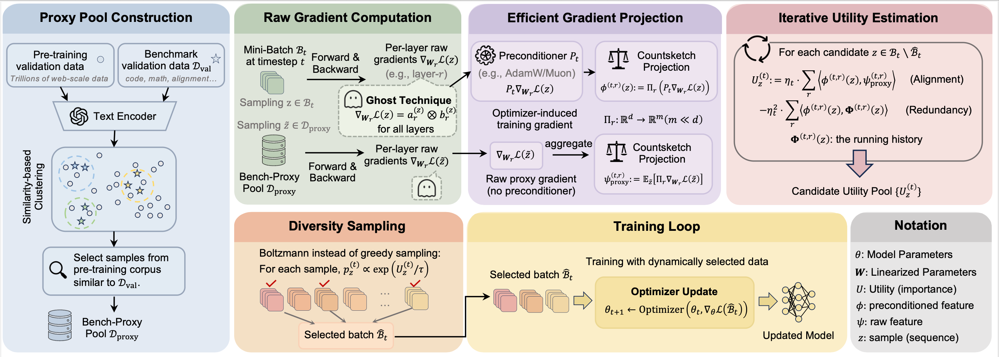
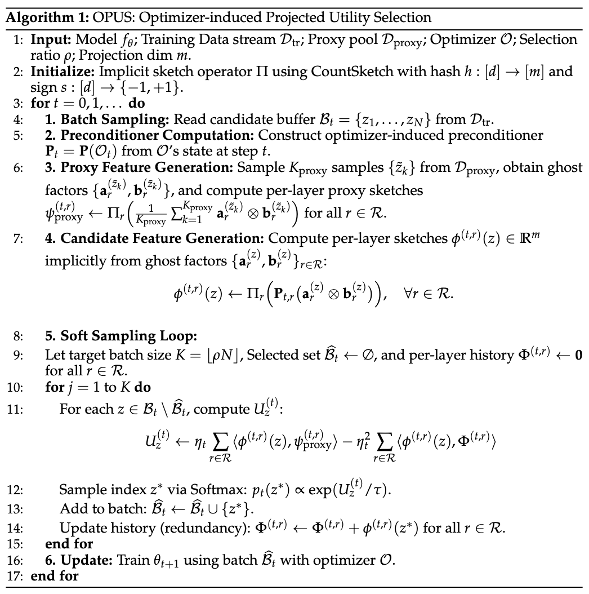
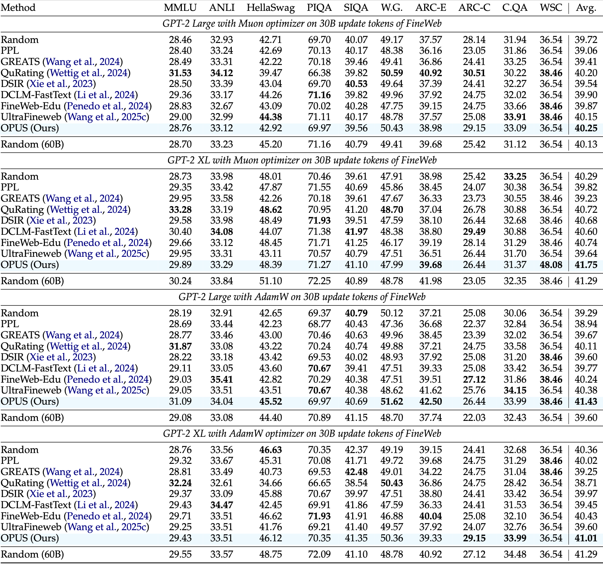
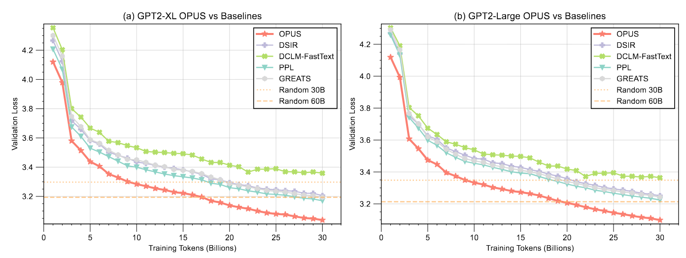
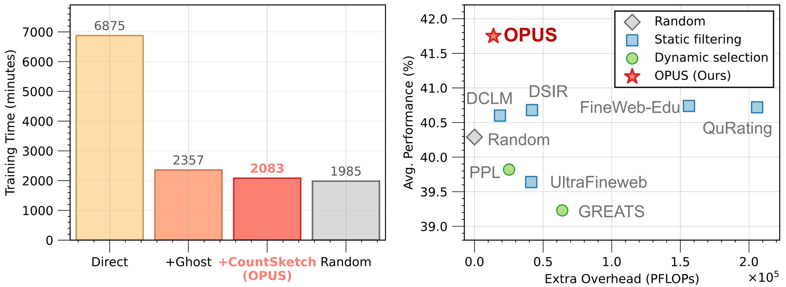
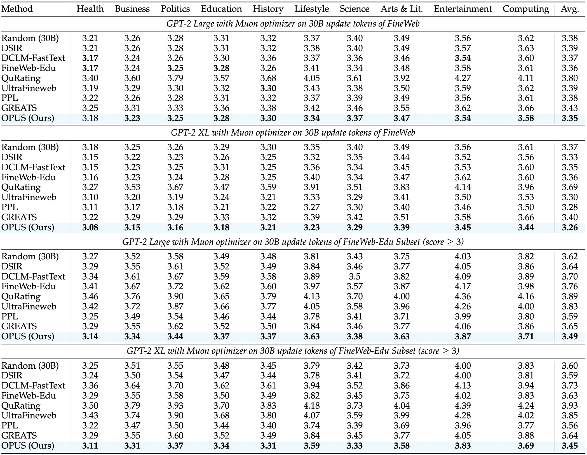
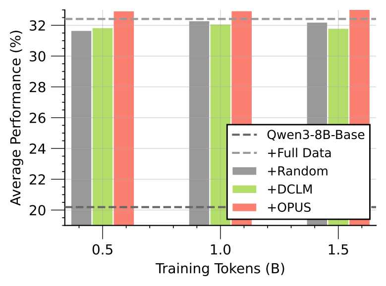
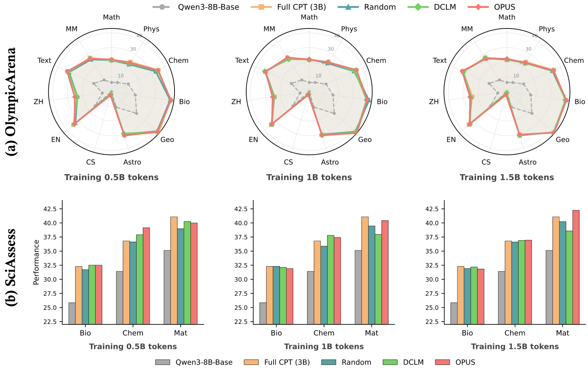
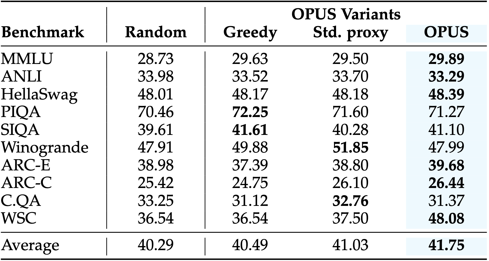

OPUS: Towards Efficient and Principled Data Selection in Large Language Model Pre-training in Every Iteration

Left: Comparison of different data selection methods. Right: OPUS outperforms random selection by an average of 2.2% accuracy across 10 downstream benchmarks and achieves 8x reduction in computation on GPT-XL using FineWeb dataset.
Abstract
As high-quality public text approaches exhaustion (the data wall), pre-training must shift from using more tokens to using better tokens. Existing data selection methods either rely on static heuristics that ignore training dynamics, or use dynamic but optimizer-agnostic criteria based on raw gradients. We propose OPUS (Optimizer-induced Projected Utility Selection), a dynamic data selection framework that defines utility in the optimizer-induced update space. OPUS scores candidates by projecting their effective updates—shaped by modern optimizers—onto a target direction derived from a stable, in-distribution proxy. To ensure scalability, we employ a Ghost technique with CountSketch for computational efficiency, and Boltzmann sampling for data diversity, incurring only 4.7% additional compute overhead. OPUS delivers strong gains across corpora, quality tiers, optimizers, and model scales. In GPT-2 Large/XL pre-training on FineWeb and FineWeb-Edu with 30B tokens, OPUS outperforms industrial baselines and even full 200B-token training. In continued pre-training of Qwen3-8B-Base on SciencePedia, OPUS achieves superior performance using only 0.5B tokens compared to full training with 3B tokens.
Method Overview
1. Utility in the optimizer-induced update space: OPUS measures data utility by the expected one-step improvement on a high-quality proxy set, under the actual optimizer geometry (e.g., AdamW/Muon), aligning scoring with the true training trajectory.
2. Projection-based scoring: Each candidate's effective update is projected onto a target descent direction from the proxy set, removing the mismatch that arises when Adam/Muon training is treated as SGD.
3. Scalable estimation + diversity: We approximate utilities via lightweight projections (Ghost + CountSketch) and sample with a Boltzmann distribution to balance exploitation and diversity while keeping overhead low.

OPUS pipeline: optimizer-induced utility estimation with scalable projection and sampling.
Algorithm

Results
OPUS delivers consistent gains across model scales, optimizers, corpora, and continued pre-training settings.
Pre-training Results on FineWeb
Evaluation across GPT-2 Large and XL with Muon and AdamW optimizers on 30B update tokens. OPUS achieves the best average accuracy across 10 downstream benchmarks in all four configurations, outperforming both static filtering and dynamic selection baselines.

Validation Loss Curves
OPUS converges faster and reaches lower validation loss than all baselines. On GPT-2 XL, it matches the 60B-token random baseline using only 17B tokens.

Efficiency & Computational Cost
OPUS incurs only 4.7% extra compute overhead vs. random sampling while achieving the best performance-compute tradeoff among all methods.

Domain-Specific Perplexity
Perplexity (lower is better) across 10 domains after 30B update tokens on FineWeb and FineWeb-Edu. OPUS achieves the lowest average perplexity in all settings, demonstrating superior cross-domain knowledge compression without domain collapse.

Continued Pre-training on SciencePedia
CPT of Qwen3-8B-Base on SciencePedia. OPUS reaches full-data (3B tokens) performance using only 0.5B tokens — a 6× data efficiency gain. Domain-level results on OlympicArena and SciAssess confirm consistent improvements across all scientific domains and token budgets.


Ablation Study
Impact of sampling strategy and validation proxy. Boltzmann sampling and benchmark-matched proxy each contribute to OPUS's gains; combining both yields the best average accuracy (41.75).

Acknowledgements
We thank Jiachen T. Wang at Princeton University and Meng Ding at University at Buffalo for helpful feedback and discussions.
BibTeX
@misc{wang2026opusefficientprincipleddata,
title={OPUS: Towards Efficient and Principled Data Selection in Large Language Model Pre-training in Every Iteration},
author={Shaobo Wang and Xuan Ouyang and Tianyi Xu and Yuzheng Hu and Jialin Liu and Guo Chen and Tianyu Zhang and Junhao Zheng and Kexin Yang and Xingzhang Ren and Dayiheng Liu and Linfeng Zhang},
year={2026},
eprint={2602.05400},
archivePrefix={arXiv},
primaryClass={cs.CL},
url={https://arxiv.org/abs/2602.05400},
}